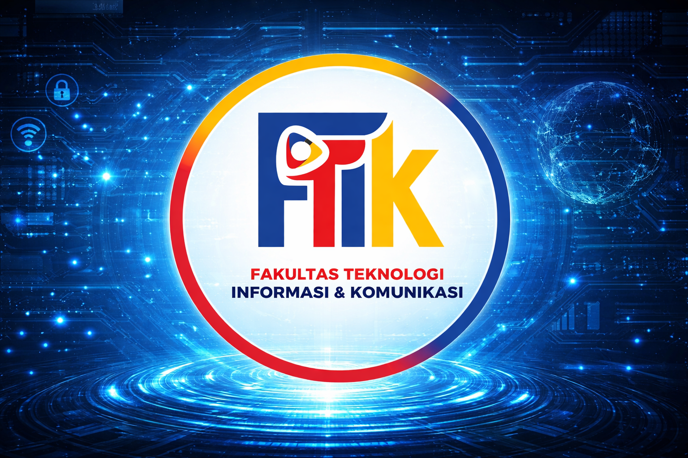

Mencetak profesional teknologi informasi yang kompeten, inovatif, dan berdaya saing global. Siap menghadapi era digital dengan kurikulum berbasis industri dan pembelajaran berbasis proyek nyata.

Program Studi Teknik Informatika di Global Institute dirancang untuk mencetak sarjana yang tidak hanya menguasai fondasi teoritis ilmu komputasi, tetapi juga mahir dalam praktik rekayasa perangkat lunak, sistem jaringan, dan desain multimedia. Kami mengintegrasikan teknologi terkini dengan wawasan technopreneurship untuk menghasilkan lulusan yang siap memecahkan masalah kompleks, berinovasi, dan menjadi pemimpin di era disrupsi digital dan industri 4.0.
Menjadi program studi yang unggul dibidang Software Engineering, Networking dan Multimedia pada tingkat regional dan global pada Tahun 2032 dengan Moral dan Etika.
1. Menyelenggarakan program pendidikan berbasis teknologi informasi yang mampu mengikuti perkembangan ilmu pengetahuan dan teknologi baik di tingkat regional maupun global, untuk memenuhi kebutuhan dunia usaha dan industri sesuai peminatan dengan sistem penjaminan mutu.
2. Melaksanakan penelitian dan pengabdian masyarakat dalam bidang teknologi informasi dengan mengangkat isu-isu di tingkat regional dan global.
3. Membentuk dan mengembangkan sumber daya manusia yang memiliki moral dan etika serta berwawasan wirausaha di bidang teknologi informasi.
4. Meningkatkan kualitas sarana dan prasarana untuk menunjang dan meningkatkan kualitas belajar mengajar.
5. Menjalin kerjasama dengan perguruan tinggi, dunia usaha dan industri, lembaga Profesi dan lembaga sertifikasi pada tingkat regional dan global.
1. Menghasilkan lulusan yang mampu bersaing dan beradaptasi dengan kebutuhan tenaga kerja pada dunia industri di tingkat regional maupun global sesuai peminatan studi.
2. Menghasilkan penelitian dan pengabdian masyarakat dalam bidang teknologi informasi sesuai dengan perkembangan dan isu-isu ditingkat regional dan global untuk memajukan masyarakat.
3. Menghasilkan sumber daya manusia (lulusan) yang bertanggung jawab, memiliki moral dan etika serta mampu mengembangkan potensi keahlian menjadi sebuah modal usaha untuk berwirausaha.
4. Menghasilkan sistem pendidikan yang bermutu sesuai dengan standar penjaminan mutu.
5. Menghasilkan dan menumbuh kembangkan link and match antara dunia pendidikan dengan dunia industri di tingkat regional maupun global.
Berbagai keunggulan yang akan kamu dapatkan selama kuliah di Program Studi Teknik Informatika FTIK Global Institute.
Lulusan Teknik Informatika sangat dibutuhkan oleh hampir semua sektor industri. Dari startup teknologi hingga perusahaan multinasional, gelar Teknik Informatika membuka pintu karir yang sangat beragam dan kompetitif.
Lulusan Teknik Informatika memiliki kemampuan analitis, pemrograman, dan problem-solving yang tinggi. Mereka mampu bekerja sebagai software engineer, data scientist, AI specialist, hingga tech entrepreneur.
Bidang teknologi informasi adalah salah satu sektor dengan pertumbuhan tercepat. Profesi di bidang IT seperti software developer, cybersecurity analyst, dan data engineer masuk dalam daftar pekerjaan paling diminati secara global.
Kurikulum Teknik Informatika dirancang bersama mitra industri dan diperbarui secara berkala, mencakup pemrograman, kecerdasan buatan, cloud computing, keamanan siber, dan pengembangan sistem berbasis data.
Kuliah dapat diselesaikan dalam 7 semester (3,5 tahun) bagi mahasiswa yang aktif dan berprestasi. Biaya kuliah kompetitif dengan berbagai pilihan beasiswa dan skema cicilan yang fleksibel.
Sistem pembelajaran berbasis project-based learning memastikan mahasiswa tidak hanya memahami teori, tetapi langsung mengerjakan proyek nyata bersama industri untuk membangun portofolio profesional sejak dini.
Lulusan Teknik Informatika Global Institute dipersiapkan untuk mengisi berbagai posisi strategis di industri teknologi dalam dan luar negeri.
Merancang dan mengembangkan aplikasi web, mobile, dan desktop untuk kebutuhan industri.
Membangun sistem kecerdasan buatan dan model machine learning untuk berbagai domain.
Melindungi sistem dan data perusahaan dari ancaman siber yang semakin kompleks.
Mengolah dan menganalisis big data untuk menghasilkan insight bisnis yang bernilai tinggi.
Mengelola infrastruktur cloud dan pipeline CI/CD untuk kebutuhan pengembangan sistem modern.
Merancang, membangun, dan mengelola infrastruktur jaringan komputer skala enterprise.
Program Studi Teknik Informatika menawarkan tiga konsentrasi yang dirancang sesuai kebutuhan industri teknologi terkini.
Konsentrasi ini membekali mahasiswa dengan kemampuan pengembangan aplikasi mulai dari perancangan arsitektur sistem, pemrograman frontend dan backend, pengujian perangkat lunak, hingga deployment sistem secara profesional.
Selengkapnya →Mahasiswa akan mempelajari algoritma machine learning, deep learning, natural language processing, dan teknik analisis data besar untuk membangun sistem cerdas yang mampu mengambil keputusan secara otomatis.
Selengkapnya →Fokus pada penguasaan teknik keamanan siber, ethical hacking, forensik digital, kriptografi, dan manajemen keamanan jaringan untuk melindungi aset digital perusahaan dari berbagai ancaman siber.
Selengkapnya →Dosen Teknik Informatika FTIK Global Institute merupakan kombinasi akademisi dan praktisi berpengalaman dari industri teknologi terkemuka.
Pertanyaan yang sering diajukan seputar Program Studi Teknik Informatika FTIK Global Institute.
Mulai perjalanan akademikmu di Program Studi Teknik Informatika FTIK Global Institute. Pendaftaran mahasiswa baru dibuka setiap semester. Raih masa depan cemerlang di dunia teknologi bersama kami.
Isi formulir pendaftaran online di website Global Institute
Lengkapi berkas persyaratan yang dibutuhkan
Ikuti tes seleksi masuk dan wawancara
Selesaikan pembayaran dan mulai kuliah
Hubungi tim kami untuk informasi lebih lanjut seputar Program Studi Teknik Informatika FTIK Global Institute.